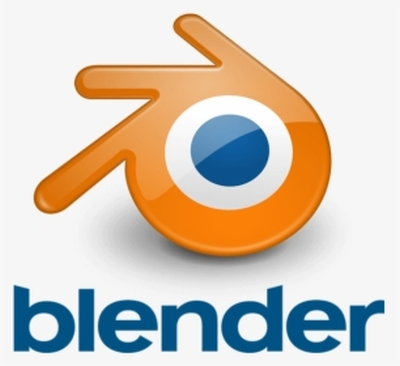
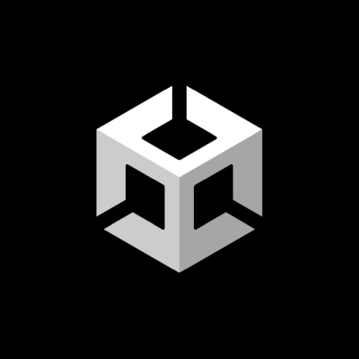

Keresztes Hunor
A fő célom az, hogy felrobbanjak és aztán úgy tegyek mintha senkit sem ismernék.
Mit tanultam eddig?
- Már amióta megszülettem, tanultam a németet és anyanyelvi szinten beszélem.
- Elő osztály óta talultam az angolt és 11. osztályban szereztem meg a C1-es nyelvvizsgámat, de azóta már mégjobban beszélem.
-
Már több programozási nyelvet is tanultam (de ezekből nem maradt meg
mindegyik):
- C#
- Java
- Python
- SQL
- HTML
- CSS
- Php
Hobbijaim
Szabadidőmben legfőképpen elektronikus zene készítéssel, motion-grafikával és játékfejlesztéssel foglalkozom.


